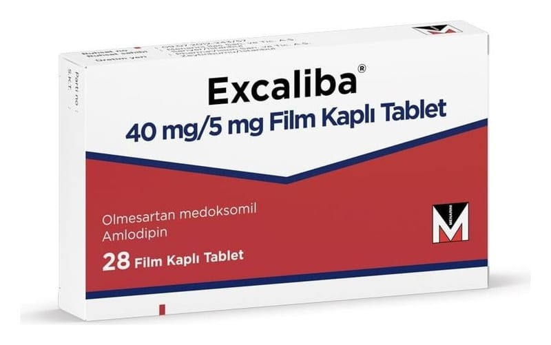

Excaliba 40 mg/5 mg Film Kaplı Tablet (28 Tablet)

Ne için kullanılır
KT · Bölüm 1EXCALİBA olmesartan medoksomil ve amlodipin (amlodipin besilat olarak) adında iki etkin madde içerir. Bu maddelerin ikisi de yüksek kan basıncınızın (hipertansiyon) düşürülmesi için kullanılır. EXCALİBA 28 film kaplı tablet halinde kullanıma sunulmuştur.
EXCALİBA, kan basıncı tek başına olmesartan medoksomil veya amlodipin ile yeterince düşürülemeyen hastalarda yüksek kan basıncının tedavisi için kullanılır.
Olmesartan medoksomil, kan damarlarını gevşeterek kan basıncını düşüren “anjiyotensin- II reseptör antagonistleri” olarak adlandırılan ilaç sınıfındandır.
Amlodipin “kalsiyum kanal blokörleri” olarak adlandırılan ilaç sınıfındandır. Amlodipin damar duvarlarının içerisine kalsiyumun girmesini durdurarak kan damarlarının kasılmasını durdurur ve böylece kan basıncını düşürür.
Bu maddelerin ikisinin de etkisi kan damarlarının kasılmasını durdurmaya katkıda bulunur, böylece kan damarları gevşer ve kan basıncı azalır.